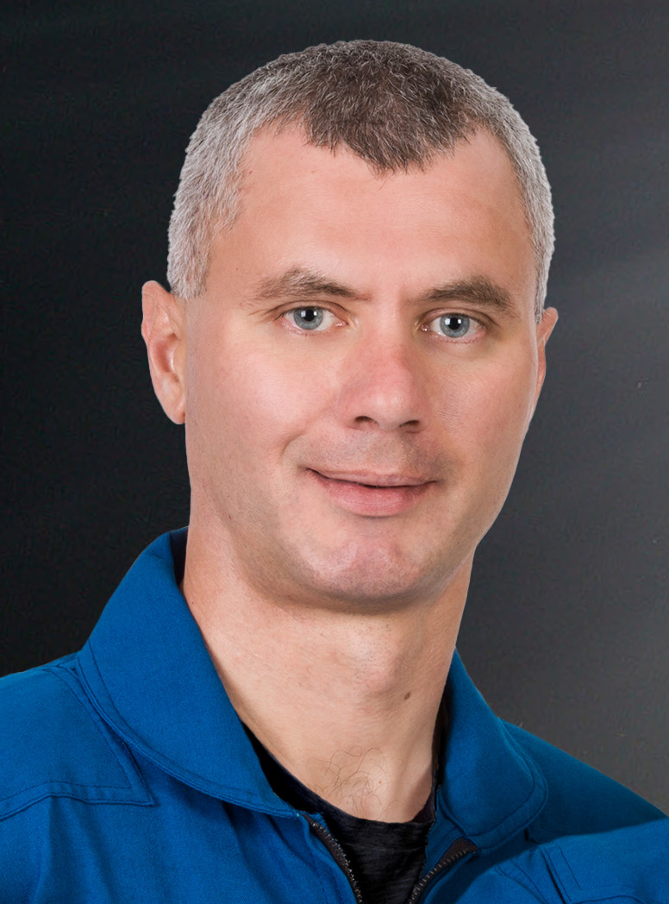

Sergey Vladimirovich Korsakov
Nationality- Russian
birth- 1984.09.01
missions -Soyuz MS-21 (Expedition 66/67)
Education -Korsakov graduated with high honors from the Bauman Moscow State Technical University in 2006 with a degree in rocketry. After his selection as a cosmonaut in 2012, he was appointed as a test cosmonaut in 2014.
Sergey Vladimirovich Korsakov (Russian Cyrillic: Сергей Владимирович Корсаков; born 1 September 1984 in Frunze, Kirghiz SSR) is a Russian cosmonaut selected by Roscosmos in 2012. He was scheduled to make his first flight into space in April 2021 as a flight engineer aboard Soyuz MS-18 ahead of a stay aboard the International Space Station; but was replaced on the crew by Mark Vande Hei in March of that year.[1][2] He was then assigned to Soyuz MS-21, which launched successfully March 18, 2022
Oleg Germanovich Artemyev
Nationality- Russian
birth- 1970.12.28
missions --Soyuz TMA-12M (Expedition 39/40), Soyuz MS-08 (Expedition 55/56), Soyuz MS-21 (Expedition 66/67)
Oleg Germanovich Artemyev (Russian: Олег Германович Артемьев; born December 28, 1970) is a Russian Cosmonaut for the Russian Federal Space Agency. He was selected as part of the RKKE-15 Cosmonaut group in 2003.[1] He was a flight engineer of Expedition 39 and 40 to the International Space Station, in 2018 he returned to space as the Commander of Soyuz MS-08, and in 2022 he returned to space as the Commander of Soyuz MS-21.
personal life and education
Artemyev was born in Riga, Latvian Soviet Socialist Republic, present-day Latvia, on December 28, 1970, and grew up in Leninsk (now Baikonur), Kazakhstan.[2]
He graduated from the Tallinn Polytechnical School in 1990. In 1998, he graduated from Bauman Moscow State Technical University with a degree in Low Temperature Technology and Physics.[3] Artemyev graduated from the Russian Academy of State Service under the President of the Russian Federation in 2009, specializing in Personnel Management.
He is married to Anna Sergeevna Malikhova.
cosmonaut career
Artemyev was selected as part of the RKKE-15 Cosmonaut group on May 29, 2003.[1] In the following years, he entered Soyuz and ISS specific training. In 2006, together with American astronauts Michael Barrat and Sandra Magnus, Artemyev completed survival training as part of Soyuz training procedures. Again in June 2006, Artemyev, Yuri Lonchakov and Oleg Skripochka completed emergency water training in Sevastopol followed by another session of survival training with Sergei Revin and space tourist Charles Simony in January 2007. In 2008, he was part of a testing campaign of the Orlan-MK space suit.
As part of the Soyuz Processing Team, Artemyev worked at the Baikonur Cosmodrome in 2010 and 2011. He was the descent module operator for the Soyuz TMA-01M mission. He also processed the Soyuz TMA-21 spacecraft that launched in 2011.[5]
Artemyev also has a personal vlog on YouTube where he films the daily life on the ISS
Denis Matveev
Nationality- Russian
birth-1983.04.25
missions -Soyuz MS-21 (Expedition 66/67)
Matveev received his degree in computing and networks from the Bauman Moscow State Technical University in 2006. After graduation, Matveev began working at the Yuri Gagarin Cosmonaut Training Center in Star City, Russia as a junior research assistant. He was promoted to engineer in 2009.
Matveev was selected as a cosmonaut in 2010. He was appointed to begin training on October 12, 2010, and was named a test cosmonaut on July 31, 2012.
The Russian magazine Cosmonautics News reported that Matveev had been selected as a flight engineer for the Soyuz MS-06 spaceflight to the International Space Station;[1] however, he did not launch on this mission, and was replaced by Ivan Vagner. Ultimately, neither Vagner nor Matveev flew on this mission. He was reassigned to Soyuz MS-21, and launched on March 18, 2022.
Kjell Norwood Lindgren
Nationality- Russian
birth-1973.01.23
missions -Soyuz TMA-17M (Expedition 44/45), SpaceX Crew-4
He began working for NASA at the Johnson Space Center in 2007. He went on to support ISS training operation at Star City, Russia and became the deputy crew surgeon for STS-130 and Expedition 24.
In June 2009, he was one of nine astronaut candidates selected by NASA out of 3500 applications and began training as part of NASA Astronaut Group 20. The nine Americans, as well as two Canadian Space Agency candidates and three JAXA candidates, started training at the Johnson Space Center in August 2009.[9] The 14 candidates carried trained in various different fields including T-38 flight training, Extravehicular activity training, survival, International Space Station operations and other various skills. The group completed their training and Lindgren and his 13 classmates became eligible for future flight assignments on November 4, 2011.
In between finishing training, he worked in the Spacecraft Communicator and Extravehicular Activity branches of NASA, and he was the Spacecraft Communicator lead for Expedition 30.
From June 18 to 27, 2017 Lindgren was Commander of the NEEMO 22 mission to the Aquarius Reef Base, located 19 meters underwater off the coast of Florida. The NEEMO 22 mission focused on both exploration spacewalks and objectives related to the International Space Station and deep space missions. As an analogue for future planetary science concepts and strategies, the mission's crew also performed marine science under the guidance of Florida International University's marine science department. Objectives for the crew also included testing spaceflight countermeasure equipment, technology for precisely tracking equipment in habitat and studies of body composition and sleep. The crew also assessed hardware sponsored by ESA that will help crew members evacuate someone who has been injured on a future lunar spacewalk.
Expedition 44/45
In 2013, he began training at the Gagarin Space Center and was assigned as backup Flight Engineer for Expedition 42/43 which launched on Soyuz TMA-15M.[10] He was later assigned to Expedition 44/45 as a flight engineer. On July 22, 2015, Lindgren launched on his first mission to the ISS alongside Russian cosmonaut Oleg Kononenko and Japanese astronaut Kimiya Yui onboard Soyuz TMA-17M.[8] Six hours later the trio docked to the ISS, officially joining Expedition 44 alongside Soyuz TMA-16M crewmembers Gennady Padalka and Mikhail Kornienko of Roscosmos and Scott Kelly of NASA. In November 2015, while on the ISS, Kjell played a set of bagpipes manufactured by McCallum Bagpipes Ltd as a memorial to Victor Hurst, who died in October of that year. McCallum Bagpipes was chosen to manufacture the bagpipes because they make them in plastic, which is easily sanitized and transported, ideal for space exploration. This is thought to be the first time the Great Highland bagpipes have been played in space.[11]
Towards the end of Expedition 44, Soyuz TMA-18M docked with the ISS carrying Russian cosmonaut Sergey Volkov, ESA astronaut Andreas Mogensen and KazCosmos cosmonaut Aidyn Aimbetov. This was unusual as it occurred before the departure of Soyuz TMA-16M, meaning there was a small period where nine people were on board the ISS. This was done in order to allow Kelly and Kornienko to remain on board the ISS for a full year, Soyuz TMA-16M landed with Paldlka, Mogensen and Aimbetov nine days after the launch of Soyuz TMA-18M, returning the ISS to normal six crew operations.[12][13]
On October 28, 2015, Lindgren ventured outside of the ISS with Scott Kelly for his first spacewalk, the two spacewalkers completed several tasks including changing an insulating unit on one of the station's Main Bus Switching Units (MBSU), carried out some maintenance on one of Canadarm-2's Latching End Effector's and prepared both of the station's "open" Pressurized Mating Adapters ahead of the installation of two International Docking Adapters.[14] On November 6, 2015, Lindgren ventured outside the station with Kelly again for his second spacewalk. Over the course of the 7 hour and 48-minute spacewalk, the two astronauts worked to restore a portion of the ISS's cooling system to its primary configuration, returning ammonia coolant levels to normal in the primary and backup radiator arrays.[15]
On December 11, 2015, he returned to Earth alongside Kononenko and Yui following 141 days in space, the Soyuz touched down on the Kazakh Steppe at night, which is rare for the Soyuz. Following landing, Lindgren and Yui returned to the Johnson Space Center in Houston to rendezvous with their families.
Dragon 2
Lindgren served as the only member of the backup crew for the SpaceX's Crew Dragon Demo-2 mission, the first test flight of SpaceX's Crew Dragon spacecraft. He trained as backup for both crew members, NASA astronauts Douglas Hurley and Robert Behnken and was ready to take either the Spacecraft Commander or Joint Operations Commander seat if need be.[18] He is also the commander of the backup crew for SpaceX Crew-1, the first operational flight of Crew Dragon spacecraft and first operational flight of the Commercial Crew Program.[19] On March 19, 2019, Lindgren started five weeks of training on the ISS Russian Orbital Segment for the flight at the Gagarin Cosmonaut Training Center in Star City, Russia alongside NASA astronauts Michael Hopkins and Victor Glover.[20]
In February 2021, he was assigned as Commander of SpaceX Crew-4, which is his second long duration mission to the ISS. He is flying alongside NASA astronaut Bob Hines, who was assigned as pilot[21] They will be joined by mission specialists Samantha Cristoforetti of ESA and Jessica Watkins.[22][23] Crew-4 launched on April 27, 2022, and docked later that day
Robert Thomas Hines
p>Nationality-americanbirth-1975.01.11
missions -SpaceX Crew-4 (Expedition 67/68)
Prior to his selection as an astronaut, Hines served as a test pilot at NASA's Johnson Space Center, as well as for the Federal Aviation Administration. In 2017, he was selected as a member of NASA Astronaut Group 22, and began his two-year training. At the time of his selection, Hines was a research pilot for the Aircraft Operations Division of the Flight Operations Directorate at NASA. In February 2021, Hines was assigned as pilot of SpaceX Crew-4, alongside NASA astronaut Kjell N. Lindgren who is the commander.They are flying with mission specialists Samantha Cristoforetti of ESA and Jessica Watkins. Crew-4 launched successfully on April 27, 2022, before docking later that day.
Jessica Andrea Watkin
Nationality-american
birth-1988.05.14
missions -SpaceX Crew-4 (Expedition 67/68)
alma matar- Stanford University (BS)
University of California, Los Angeles (MS, PhD)
California Institute of Technology (Postdoc)
occupation - astronaut -geologist
As an undergraduate, Watkins worked at the Ames Research Center to support the Mars Phoenix lander and prototype Mars drill testing. In 2009, she was chief geologist for the NASA Spaceward Bound Crew 86 at the Mars Desert Research Station.[9] As a graduate student, she worked at the Jet Propulsion Laboratory on the NEOWISE project to survey near-Earth asteroids. Watkins also worked on planning for the Mars rover Curiosity.[9] In 2011, Watkins served as a science operations team member for an analog mission.[9]
She has served as a planner for the Mars 2020 rover and a Mars sample-return mission, and was a science team member for a Desert Research and Technology Studies analog mission.[3] As a postdoctoral fellow at Caltech, and as a collaborator on the Mars Science Laboratory Science Team, she participated in daily planning of the Mars rover activities and uses its image data combined with orbital data to investigate the stratigraphy, geology, and geomorphology of Mars.[10]
In June 2017, Watkins was selected as a member of NASA Astronaut Group 22 and began her two-year training in August.[3][11] In December 2020, she was selected to be a part of the Artemis Team to return humans to the Moon.[12] The year 2025 is the target date for the crewed lunar landing mission.[13] In November 2021, she became the 4th astronaut of Group 22, and first Black woman, to be assigned a long-duration mission to the International Space Station (ISS) after being chosen as the final member of SpaceX Crew-4, which launched in April 2022.
It is Watkins’ first time in space. She is serving as a mission specialist for the six-month mission.[1] Her role involves observing and photographing geological changes on Earth, as well as other investigations into Earth and space science, biological science, and the effects of long-duration spaceflight on humans.
NEEMO 23[
Watkins participated in NEEMO mission 23 from June 10 to 22, 2019.[17] This mission tested technologies and objectives for deep space mission and lunar explorations on the seafloor. Watkins’ NEEMO mission was the first of its kind to feature an all-female research team led by Italian astronaut Samantha Cristoforetti
Samantha Cristoforetti
Nationality- italian
birth-1977.04.26
missions -Soyuz TMA-15M (Expedition 42/43)
SpaceX Crew-4 (Expedition 67
alma matar- Technical University of Munich
University of Naples Federico II
Cristoforetti was officially selected as an astronaut in 2009 by the European Space Agency, from a population of 8000 applicants.
Expedition 42/43
On 3 July 2012, the European Space Agency announced that Cristoforetti was set for a long-duration mission to the ISS in 2014.[16]
On 23 November 2014, Soyuz TMA-15M, carrying Cristoforetti and two other astronauts launched from the Baikonur Cosmodrome in Kazakhstan. It successfully docked at the International Space Station roughly six hours later.[17] Cristoforetti, along with her crew mates, returned safely from the ISS on 11 June 2015. She stayed 199 days in space and so became the holder of the record for the longest single mission for a woman. Previously, the NASA astronaut Sunita Williams held that record with 195 days after her Expedition 33 mission to the ISS. Cristoforetti's record was beaten on 5 June 2017 by Peggy Whitson during Expedition 52[4][18] and on 28 December 2019 by Christina Koch during Expedition 60.[19]
Cristoforetti's first mission to the ISS was called Futura. During her stay, she performed numerous scientific experiments simulating prolonged stay in space and Lunar and Mars orbit. She was the primary operator during the undocking of the ATV-5. In February 2015, she began the outreach program "Mission X: Train Like an Astronaut", where students 8–12 years old were challenged to get fit during a nine-week program while Cristoforetti trained in space.[20] Other outreach activities included learning how the Spirulina algae can be a source of food, while creating photosynthesis in a recycled air environment.[21]
Cristoforetti was slated for 1, up to possibly 3, space walks, however when part of her personal EVA equipment was lost due to the failed launch[22] of the Orbital Cygnus Orb-3 mission in October 2014,[23] those EVAs were scrapped. That equipment for the ISS crew was on board of the failed Orb-3 mission is clear from the manifest of its cargo, which listed: "Total Cargo: 2,215 kg (With packaging: 2,296 kg) of which EVA Equipment: 66 kg."[24]
Cristoforetti has been photographed with references to the Hitchhiker's Guide to the Galaxy on her shirt while her crewmate Anton Shkaplerov had a shirt with the Answer to the Ultimate Question of Life, the Universe, and Everything (being 42).[25] ISS Expedition Mission 42 blog has a special section called "don't panic".[26] In April 2015, the Dragon capsule delivered the ISSpresso, the first zero-G espresso machine which Cristoforetti installed. On 3 May 2015 she brewed the first cup of espresso in space[27] and posted a picture of herself on Twitter, wearing a Starfleet uniform while drinking the espresso, with the comment "'There's coffee in that nebula'... ehm, I mean... in that #Dragon" (referencing Captain Janeway from Star Trek: Voyager, and her love of coffee).[28][26] [29] On 28 February 2015, the day following the death of Leonard Nimoy, who portrayed Mr. Spock on Star Trek, she photographed herself in the Cupola, wearing a Starfleet pin on her shirt and giving the Vulcan salute.[30] A one-month delay after the failure of two Russian rockets extended her stay in space past the European astronaut and female astronaut endurance records.[31]
On 16 July 2015, she was awarded the Order of Merit of the Italian Republic by Italian President Mattarella, who said: "She has been followed with affection and love by all Italians."[32] The Order of Merit is the highest ranking honour of the Republic
Expedition 67
Cristoforetti was assigned to fly to the International Space Station a second time in spring 2022.[34] She is flying on the fourth mission of NASA's Commercial Crew Program, SpaceX Crew-4 on a SpaceX Crew Dragon spacecraft.[35] The mission launched on April 27, 2022, before docking later that day.[36] Cristoforetti's second mission to the ISS is called Minerva. She was the first person to make a TikTok video on board the International Space Station and some of her onboard videos has been viewed millions of times.[37] On May 13, 2022, she became the first astronaut to operate the rHEALTH ONE, space's most powerful biomedical analyzer to date.[38] She demonstrated loading of tiny drops of biological samples into the device and collection of over 100 million raw data points over several minutes with laser-based sheath-flow analysis. Her successful operation paves the way for big data in space for understanding and treating spaceflight medical conditions including circadian rhythm disturbances, bone loss, ionizing radiation exposure, kidney stones, among other conditions.
On 21 July 2022, Cristoforetti completed her first spacewalk, which lasted 7 hours and 5 minutes. Along with Oleg Artemyev, the joint ESA-Roscosmos spacewalk was the third spacewalk to set up the European Robotic Arm. Cristoforetti was the first non-Russian to use the Orlan spacesuit since Michael Barratt in June of 2009, and the first European astronaut to do so since Jean-Pierre Haigneré on April 16, 1999.
Francisco Carlos rubio
Nationality-american
birth-1975.12.11
missions Soyuz MS-22 (Expedition 67/68)
alma matar- TUnited States Military Academy (BS)
In 2017, Rubio was selected as a member of NASA Astronaut Group 22, and began his two-year training.
On July 15, 2022, NASA announced he will fly on board Soyuz MS-22.
Rubio launched aboard Soyuz MS-22 on September 21, 2022.
Sergey Prokopyev
Nationality- italian
birth-1975.02.19
missions-Soyuz MS-09 (Expedition 56/57), Soyuz MS-22 (Expedition 67/68)
awards-Hero of the Russian Federation
In October 2010 Prokopyev was selected as a cosmonaut by Roscosmos, he began cosmonaut training February 2011, he graduated and gained the qualification of "test cosmonaut" in August 2012.[2]
Following his graduation he was part of the specialization and improvement group for the ISS Russian Orbital Segment and Soyuz TMA-M spacecraft, he held this position until June 2015 when he was assigned to a backup crew.
He trained as backup flight engineer for Soyuz TMA-18M and ISS EP-18, training for a short-duration eight day stay on the ISS that was eventually flown by KazCosmos cosmonaut Aidyn Aimbetov.[3] Unlike most backup assignments, his assignment to TMA-18M did not lead into a later prime crew assignment, therefore following the launch of TMA-18M 2 September 2016 Prokopyev did not rotated onto a prime crew immediately.
Expedition 56/57
Prokopyev was originally meant to be Soyuz commander on Soyuz MS-08 and flight engineer on ISS Expedition 55/56 although due to Russian budget cutbacks reducing the number of crew members on the ISS Russian segment he was removed from the flight and instead was assigned as backup Soyuz commander Soyuz MS-07 and flight engineer/ISS commander for Expedition 54/55.[4] Following the launch of Expedition 54/55 he was assigned as prime crew flight engineer for Expedition 56/57 alongside German Alexander Gerst, who would serve as ISS commander for Expedition 57, and NASA astronaut Jeanette Epps, who would later be replaced by astronaut Serena Aunon-Chancellor.
The trio launched on Soyuz MS-09 from the Baikonur Cosmodrome on 6 June 2018 and spent approximately two days free flying in Low Earth orbit before the rendezvoused and docked to the ISS on 8 June, officially joined the Expedition 56 alongside American astronauts Andrew Feustel and Richard Arnold as well as Russian cosmonaut Oleg Artemyev.[5] He performed his first Spacewalk alongside Artemyev on 15 August, the two spent 7 hours and 46 minutes working outside the station where they installed a Roscosmos-DLR experiment for observing animal migration, called ICARUS onto the outside of the station and manually deployed four CubeSat into orbit.[6] On 29 August an air leak was observed inside the station, this was later discovered to be caused by a hole aboard Soyuz MS-09, Prokopyev's spacecraft.[7]
Following the departure of Soyuz MS-08 on 4 October 2018, Prokopyev, Gerst and Aunon-Chancellor transferred over to Expedition 57, they were scheduled to be joined by Russian cosmonaut Aleksey Ovchinin and American astronaut Nick Hague on 11 October, although the flight was aborted during launch cancelling their arrival. In order to avoid de-crewing the space station, the landing of MS-09 was delayed from 11 December to 20 December, while the launch of Soyuz MS-11 was advanced from 20 December to 3 December, giving the two spacecraft and their six crew members a 17 day hand-over period. Prokopyev and his two crew mates worked together as a crew of three until 3 December 2018, with the arrival of Soyuz MS-11 carrying Russian cosmonaut Oleg Kononenko, CSA astronaut David Saint-Jacques and NASA astronaut Anne McClain.[8] During his final days on the ISS on 11 December 2018, he and Kononenko performed a spacewalk to inspect the hole on Soyuz MS-09, they took images and applied a thermal blanket to the damaged area on the Soyuz's "orbital module", towards the end of the excursion the two also retrieved some science experiments from the outside of the station.[9]
He, Gerst and Aunon-Chancellor returned to Earth on 20 December 2018, ending Prokopyev's first spaceflight after 196 days in space
Expedition 67/68
Prokopyev launched for his second journey to space on 21 September 2022 abord Soyuz MS-22 to the International Space Station[11] with a russian cosmonaut, Dmitriy Petelin and NASA astronaut Francisco Rubio.[12] Prokopyev is part of Expedition 67 and will be part of Expedition 68. His second mission is planned to last 188 days with a return date to Earth currently schedule on the 18 March 2023.
Dmitriy Aleksandrovich Petelin
Nationality-Russian
birth-1983.07.10
missions Soyuz MS-22 (Expedition 67/68)
Petelin graduated from the South Ural State University in 2006 with a degree in aircraft and helicopter engineering. Following graduation, he worked as an engineer for NIK, LLC. On October 26, 2012, he became a cosmonaut and reported to the Yuri Gagarin Cosmonaut Training Center. He completed cosmonaut training and was named a test cosmonaut on July 15, 2014.
He is married and has one daughter.